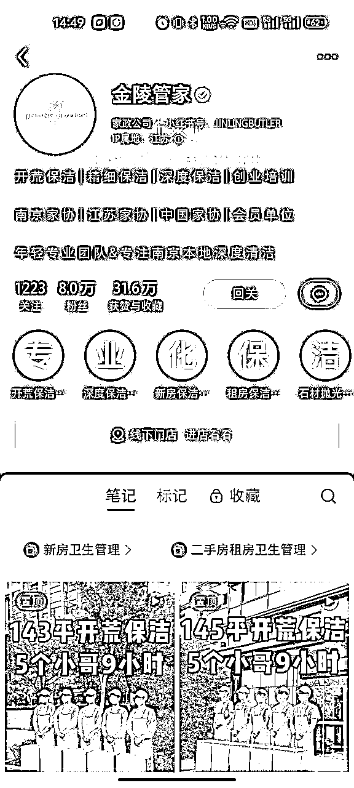
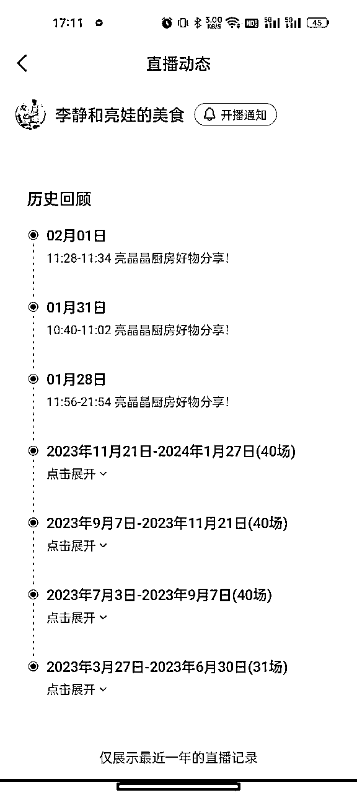
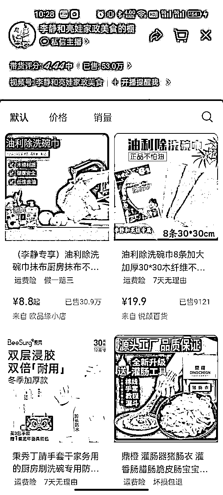
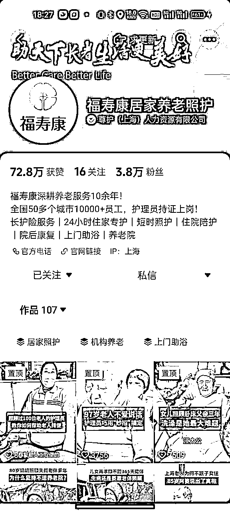
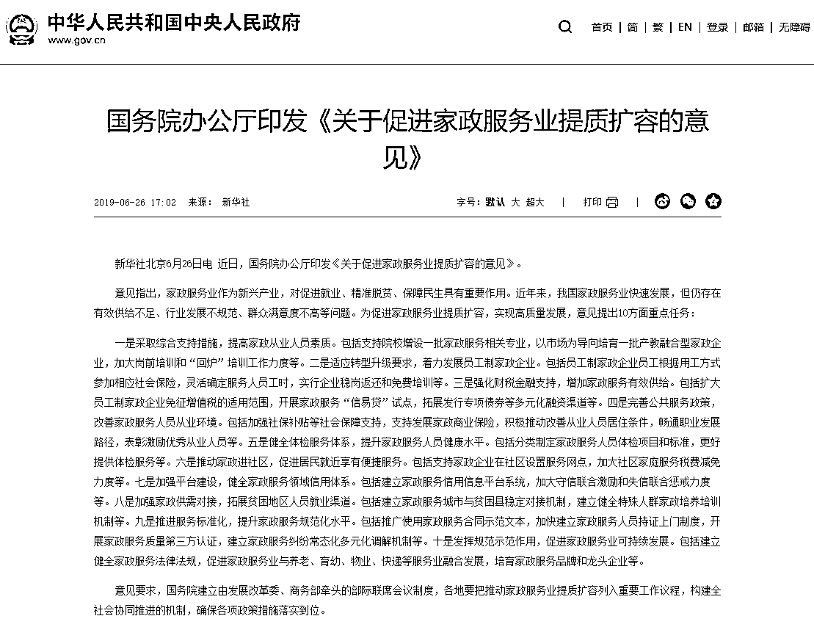

来源：https://tatf3ft4r2.feishu.cn/docx/EjH3dvCj7oXtTQxAaTFcAjkBngg
我们打开58同城和天鹅到家，基本上包含了保洁服务，清洗服务，家居养护，维修换新，护理服务，管道疏通，搬家服务等大项，每个大项中又可细化出各种小项。
而随着“十四五”期间我国迈入中度老龄化社会，养老类服务需求会进一步提升。根据国家统计局公布，2021年末全国人口为14.13亿人，比2020年末增加48万人。2021年末，60岁及以上人口为2.67亿人，占18.9%。其中65岁及以上人口为2.01亿人，占14.2%。
摘自锐观网《2023-2028年中国家政服务行业投资规划及前景预测报告（上下卷）》
根据《2023-2028年中国家政服务行业投资规划及前景预测报告（上下卷）》，2022年中国消费者使用家政服务的类型主要集中在家居保洁方面，但是随着三胎放开和老年化逐渐加剧的情况下，像收纳整理，母婴护理，养老看护，医疗陪诊等服务都在不断的增加。
2022年第四季度全国招聘大于求职“最缺工”的100个职业排行
无论是全国家政连锁品牌还是地方区域企业，一种是B2C直营模式，如轻喜到家，金陵管家（@非大厂叙事 https://t.zsxq.com/16VpiFqRq），还有一种像天鹅到家，啄木鸟或者传统的夫妻店，左手客户，右手阿姨，从中赚取中介费，不论哪种模式，家政服务行业因为进入门槛比较低，服务内容比较分散，所以对于普通人都有机会入局。
家政服务包含内容比较多，接下来我会按照分类，从简单劳务型，知识技能型，专家管理型进行案例拆解。
小红书账号：金陵管家
笔记形式：视频
粉丝数：8万
变现方式：引流微信
内容特点：人设为酒店客房管家，把星级酒店客房标准平移到家庭保洁，各方面打造专业化
小红书账号：星聚星生活管家
笔记形式：视频
粉丝数：2908
变现方式：引流微信
内容特点：人设为退伍兵哥哥，把部队内务标准平移到家庭保洁，打造放心，细致

1）两个账号都是采用视频形式，定位专业人设，统一服装，统一作业工具，视频拍摄从接单出发到完成客户家清洁任务，打扫前后对比展示，细节展示等，然后评论区引导私信添加微信，截止目前，金陵管家共发布250条笔记，粉丝8万，星聚星管家共发布274条笔记，粉丝2908。
产品主要为家庭清洁和创业培训
家庭清洁分为新房开荒保洁，日常深度保洁，全屋整理，搬家还原等
家庭清洁分为新房清洁和现房、二手房清洁，价格按照房屋面积计算，100平米房子家庭清洁费用大概在2500-3500元
家庭清洁师培训 9800元
家庭清洁分为新房清洁和现房日常清洁，价格按照房屋面积计算，100平房子家庭清洁费用大概在2500-4500元
小红书/视频号/抖音账号：李静和亮娃家政美食
笔记形式：视频
粉丝数：20.1万+46.7万
变现方式：带货
内容特点：展示做菜过程


抖音账号：护工面试官
笔记形式：视频
粉丝数：10.8万
变现方式：引流线下
内容特点：人设为护工机构总监，内容围绕护工月嫂岗位问题
抖音/小红书账号：福寿康居家养老照护
笔记形式：视频
粉丝数：3.8万
变现方式：引流线下
内容特点：护工上门服务老人，体现护工的爱心，温暖

护工面试官：通过真人出镜口播视频+直播引导微信
福寿康居家养老照护：通过对照护的老人，家属，护工的采访形式，输出视频内容，评论区进行互动

陪护天下：护工月嫂育婴师保洁家务师招聘和培训，加盟
福寿康居家养老照护：长护险服务，住家照护，短时照护，住院陪护，院后康复，上门助浴，养老院
陪护天下：线上获取线索，没有资格证的先培训考证，然后介绍到客户家，收取服务费
福寿康居家养老照护：线下通过社区等进行合作，线上通过内容评论引导到线下，针对不同客户需求以及不同客户情况提供特色服务，
一端是客户各种各样的需求，一端需要专业人员提供服务交付
对于普通人怎么来做？做需求和交付的连接！
1、从需求端角度，找到有需求的客户，也就是获取精准流量，找当地能够交付的同行合作。
2、从交付端角度，建立一套交付标准，批量培训专业人员，和有流量的合作。
当然，新人刚开始下场，还是要先从需求端入手，难度相对会低一点，从线上平台获取需求，然后找同城专业人员进行交付，缺点是交付品质无法把控，后续的复购客户就会直接找阿姨了。
根据国务院办公厅印发的《关于促进家政服务业提质扩容的意见》，从政策角度给予家政服务行业指导支持，以及上述分析看出，家政服务行业包含的项目非常广泛，但是大部分项目进入门槛比较低，想要长期不断建立壁垒，核心在于交付的服务品质稳定性，所以还是要回归到企业对员工的管理培训以及完善的保障制度，能否建立稳定高质量的交付，进而让客户建立品牌信任，不然就会不断拉新，运营成本始终无法降低。
